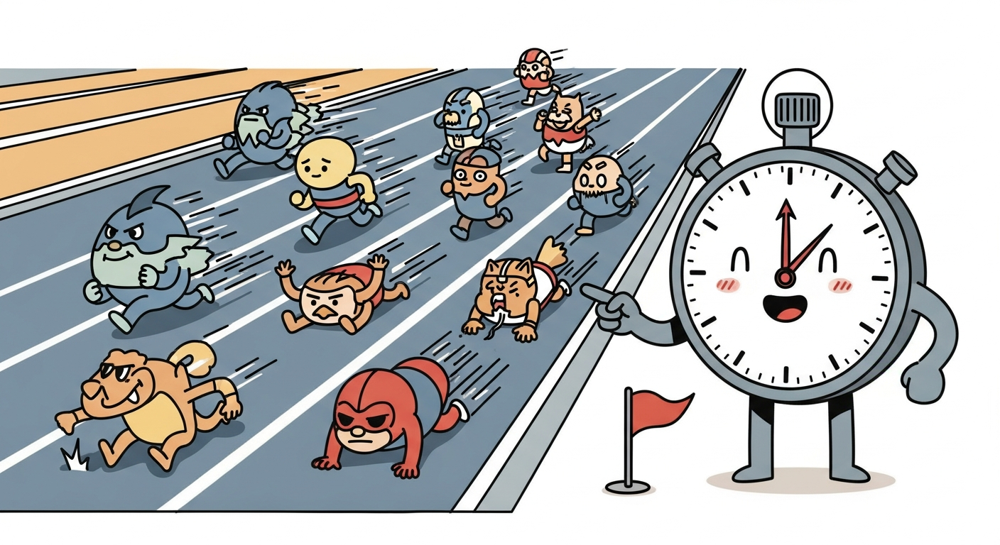
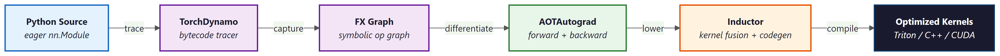

Once a model trains correctly, the next question is whether it trains fast enough. PyTorch ships three tools that together answer that question: torch.compile compiles the model to fused kernels with one line of code, the profiler measures where time is actually going, and the memory snapshot shows where memory is actually going. This section covers each tool, the common bottlenecks they reveal, and the corresponding fixes.
torch.compile

Figure E.8.1: torch.compile traces Python bytecode with Dynamo, captures an FX graph, differentiates with AOTAutograd, then lowers through Inductor to fused Triton or native kernels.
The traditional PyTorch execution model is eager: every operation dispatches to a kernel, runs, and returns before the next operation is queued. The overhead per kernel launch is small (microseconds), but for a transformer that runs hundreds of kernels per layer per token, it adds up. torch.compile traces the model with TorchDynamo, fuses chains of pointwise operations into single kernels with Inductor (the default back end), and replaces the eager execution with a compiled call. For pure forward passes the speedup is typically 1.3 to 2x; for full training loops it is often 1.2 to 1.5x; for inference of small models it can be 3x or more.
import torch
model = NeuralNetwork(50, 10).cuda()
compiled = torch.compile(model) # default mode
# The compiled model behaves identically to the eager one.
features = torch.rand(64, 50, device="cuda")
logits = compiled(features) # first call: traces and compiles
logits = compiled(features) # subsequent calls: fast
Three modes are available via the mode= keyword. default compiles eagerly when shapes change, prioritizing flexibility. reduce-overhead aggressively caches CUDA graphs to drive down per-step launch overhead; ideal for small models with fixed input shapes. max-autotune spends much longer at compile time exploring kernel autotuning options to squeeze out the last 10 to 20 percent of throughput; worthwhile for production inference where the compile cost amortizes over millions of requests.
torch.compile traces the model under specific input shapes. If shapes change frequently (variable sequence lengths without padding, dynamic batch sizes), each new shape triggers a fresh compilation, and the resulting "compilation thrash" can be slower than eager mode. Mitigations: pad sequences to bucket boundaries, fix the batch size, or pass dynamic=True to let the compiler generate shape-polymorphic code. Inspect torch._dynamo.config.cache_size_limit if the suspicion is recompilation; raising it above the default 8 can help but is rarely the right answer.
torch.profiler
torch.profiler.profile is a context manager that records CPU events, GPU kernel launches, memory allocations, and stack traces over a window of iterations. The output can be exported as a TensorBoard trace or a Chrome trace JSON, both of which give an interactive flame graph of where time is being spent. The single most valuable diagnostic for any "training is slow but I don't know why" problem.
import torch
from torch.profiler import profile, schedule, tensorboard_trace_handler
# Warmup for 2 steps, record 5, repeat the cycle once.
prof_schedule = schedule(skip_first=2, wait=1, warmup=1, active=5, repeat=1)
with profile(
activities=[torch.profiler.ProfilerActivity.CPU,
torch.profiler.ProfilerActivity.CUDA],
schedule=prof_schedule,
on_trace_ready=tensorboard_trace_handler("./profiler_logs"),
record_shapes=True,
profile_memory=True,
with_stack=True,
) as prof:
for step, (features, labels) in enumerate(train_loader):
features = features.cuda(non_blocking=True)
labels = labels.cuda(non_blocking=True)
optimizer.zero_grad(set_to_none=True)
loss = torch.nn.functional.cross_entropy(model(features), labels)
loss.backward()
optimizer.step()
prof.step() # advance the profiler schedule
# In a shell: tensorboard --logdir ./profiler_logs
schedule argument controls when the profiler is active so a long training run is not flooded with trace data.Inside TensorBoard's PyTorch Profiler view, the most useful tabs are: Overview (top-level summary of where time goes, with concrete recommendations), Operator (sorted list of which operators consumed the most time, useful for spotting unexpectedly slow ops), Kernel (the same for GPU kernels), Trace (the flame graph; pan and zoom to see exactly what happened on each thread and each CUDA stream), and Memory (allocation timeline).
Common Bottlenecks and Fixes
The profiler answers what is slow; experience answers what to do about it. The most common bottlenecks the profiler surfaces in training loops are:
- Dataloader bound
- Long stretches where the GPU is idle waiting for data. Visible as gaps on the CUDA timeline. Fixes: increase
num_workers(Section E.4), enablepin_memory=True, setpersistent_workers=True, raiseprefetch_factor, move per-sample preprocessing to the GPU usingtorchvision.transforms.v2orkornia. - Sync points
- Operations that force the CPU to wait for the GPU. Most often caused by
tensor.item(),tensor.tolist(),print(tensor), conversions to NumPy, or boolean checks likeif loss.isnan():. Fix: batch these checks, log only every N steps, and never call.item()inside the hot loop on values you do not need this step. - CPU-bound launch overhead
- The GPU is fast but the CPU cannot dispatch kernels quickly enough. Visible when GPU utilization is low despite no dataloader gaps. Fix:
torch.compile(kernel fusion reduces total kernel count) or CUDA Graph capture for inference (eliminates launch overhead). - Dtype mismatches forcing copies
- Adding a float32 tensor to a bfloat16 tensor triggers an implicit cast. Visible as unexpected
aten::toentries in the operator table. Fix: keep dtypes consistent through the forward pass, especially when mixing autocast scopes and non-autocast computations. - Suboptimal kernel selection
- The same operation has multiple implementations and PyTorch occasionally picks the wrong one for the input shape. Fix:
torch.compileinmax-autotunemode, or for inference, replace dense ops with their fused equivalents (FlashAttention, fused MLPs from xformers).
Memory Snapshot
When a training run fails with CUDA out of memory: tried to allocate X GiB, the error tells you what failed but not what was using the memory. The memory snapshot fills that gap: it records every allocation and deallocation, and renders an interactive timeline of memory use that pinpoints the largest live tensors.
import torch
torch.cuda.memory._record_memory_history(max_entries=100_000)
# Run the workload that OOMs (or just a few iterations of the suspect loop).
try:
for step in range(20):
train_one_step()
except torch.cuda.OutOfMemoryError:
pass
# Dump a snapshot to disk for visualization.
torch.cuda.memory._dump_snapshot("oom_snapshot.pickle")
torch.cuda.memory._record_memory_history(enabled=None)
# Load the snapshot in https://pytorch.org/memory_viz
The visualizer shows each allocation as a colored block on a timeline, with the call stack that produced it. The most common patterns it reveals are: an activation that grows linearly with sequence length and is too large to fit (fix: enable activation checkpointing), an optimizer that doubles parameter memory (fix: switch to 8-bit AdamW from bitsandbytes or shard with FSDP), a forgotten tensor retained by a hook closure (fix: detach before storing), and Python objects that hold tensor references past their useful lifetime (fix: explicit del and torch.cuda.empty_cache()).
A training run OOMs after 1000 steps. The memory snapshot shows the peak grew slowly across iterations rather than at the first step. This signature points to a leak rather than a sizing problem: each iteration retains slightly more memory than the previous one. The usual culprits are accumulating a list of losses without calling .detach(), registering forward hooks without removing them, or holding past activations in a custom debugging dictionary. Confirm by adding the del statements suggested by the snapshot and re-running with the profiler memory view enabled.
When the memory snapshot fingers the optimizer as the OOM culprit, swap torch.optim.AdamW for bitsandbytes.optim.AdamW8bit. Adam's two momentum buffers go from 8 bytes per parameter to 2 bytes, often the cheapest 4x reduction available short of FSDP. The change is one import and one class swap.
import bitsandbytes as bnb
optimizer = bnb.optim.AdamW8bit(model.parameters(), lr=3e-4,
betas=(0.9, 0.95), weight_decay=0.1)
Microbenchmarking with torch.utils.benchmark
When comparing two implementations of the same op, naive timing with time.time() is misleading because GPU work is asynchronous and the first few calls include compilation and cache warming. torch.utils.benchmark.Timer handles the synchronization, warmup, and statistical aggregation, returning a confidence interval for each run.
import torch
import torch.utils.benchmark as benchmark
x = torch.randn(1024, 1024, device="cuda")
y = torch.randn(1024, 1024, device="cuda")
t_eager = benchmark.Timer(
stmt="x @ y",
globals={"x": x, "y": y},
label="matmul",
description="eager",
).blocked_autorange(min_run_time=1.0)
print(t_eager)
torch.utils.benchmark. Handles GPU synchronization, warmup, and statistical aggregation automatically.Three tools, three questions. torch.compile answers "can I make this faster without changing the code?" (often yes, 1.2 to 2x). torch.profiler answers "where is the time actually going?" (typically the dataloader, sync points, or a single dominant operator). torch.cuda.memory._record_memory_history answers "what is using all my memory?" (usually activations, optimizer state, or a leak). Together they turn performance optimization from guesswork into measurement; reach for them before changing the model architecture or buying more GPUs.
Further Reading
Performance Tooling References
torch.compile, its modes, dynamic shapes, and troubleshooting. The "What Every User Should Know" section is particularly worth a careful read.torch.profiler with concrete examples of CPU, GPU, and memory profiling.torch.compile work.